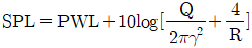
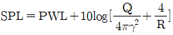
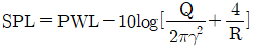
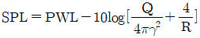
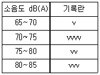
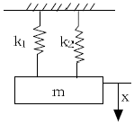

소음진동산업기사 (2005-09-04 기출문제)
1과목: 소음진동개론
1. 음파의 굴절에 관한 설명으로 알맞지 않은 것은?
- 대기온도차에 따라 밤에 상공쪽으로 굴절하며 거리감쇠가 크다.
- 굴절전과 후의 음속차가 크면 굴절도 커진다.
- 음파가 한 매질에서 타 매질로 통과할 때 구부러지는 현상이다.
- 풍속차에 의한 경우 음원보다 상공의 풍속이 클 때 풍상큭에서는 상공으로 굴절한다.
(정답률: 알수없음)

2. 60phon의 소리는 몇 sone의 소리로 들리는가?
- 1
- 2
- 4
- 8
(정답률: 알수없음)
3. 하나의 파면상의 모든점이 파원이 되어 각각 2차적인 구면파를 사출하여 그 파면들을 둘러싸는 면이 새로운 파면을 만드는 현상(원리)은?
- Dewave
- Intensity
- Dopple
- Huyghens
(정답률: 알수없음)
4. 공장내에서 음원으로부터 r(m) 떨어진 지점의 음압도(SPL, dB)를 알려고 한다. 알맞은 식은? (단, PWL은 음향파워레벨, Q는 지향계수, R은 실정수)




(정답률: 알수없음)
5. 청각기관의 역할에 관한 설명으로 옳지 않은 것은?
- 음의 고저는 자극을 받는 내이의 섬모 위치에 따라 결정된다.
- 중이와 음의 전달매체는 액체이다.
- 중이는 이소골에 의해 진동음압을 20배 정도 증폭하는 임피던스 변환기 역할을 한다.
- 외이도는 일종의 공명기로 음을 증폭한다.
(정답률: 알수없음)
6. 진동속도의 최대치가 0.0004m/sec이고 진동수가 30Hz인 정현진동의 경우 진동가속도레벨(기준진동의 가속도 실효치:10-5m/sec2)은?
- 약 42dB
- 약 56dB
- 약 68dB
- 약 75dB
(정답률: 알수없음)
7. 음의 세기 I, 매질의 밀도 ρ, 음속 C, 입자속도 V의 상호관계식을 바르게 나타낸 것은?
- I=ρCV
- I=ρCV2
- I=ρC2V
- I=ρ2CV
(정답률: 알수없음)
8. 마루위의 점은원이 반자유공간으로 음을 전파하고 있다. 음원에서 4m인 지점의 음압레벨 88dB이라면 이음원의 파워레벨은 몇 dB인가? (단, 무지향성)
- 100
- 104
- 106
- 108
(정답률: 알수없음)
9. ‘진동의 역치’에 관한 설명으로 알맞은 것은?
- 인간이 견딜수 있는 최소 진동레벨 값
- 인간이 견딜 수 있는 최대 진동레벨 값
- 진동을 겨우 느낄 수 있는 진동레벨 값
- 진동을 최대로 느낄 수 있는 진동레벨 값
(정답률: 알수없음)
10. 잔향시간이란 음압도가 몇 dB 감소하는데 소요되는 시간인가?
- 20dB
- 40dB
- 60dB
- 80dB
(정답률: 알수없음)
11. 음의 회절에 관한 내용으로 가장 알맞은 것은?
- 장애물 뒤쪽으로 음이 전파하는 현상이다.
- 회절 전과 후의 음속차로 회절의 정도를 알 수 있다.
- 파장이 작으면 회절이 잘 된다.
- 물체의 틈구멍에 있어서는 그 틈구멍이 클수록 회절이 잘 된다.
(정답률: 알수없음)
12. 원거리 음장(far field)에 대한 설명 중 틀린 것은?
- 음장내 확산음장에서는 역2승 법칙이 만족된다.
- 음장내 확산음장은 잔향음장에 속하며 음의 에너지 밀도각 각 위치에서 일정한 것을 말한다.
- 입자속도는 음의 전파방향과 개연성이 있다.
- 음장내 잔향음장은 음원의 직접음과 벽에 의한 반사음이 중첩되는 구역이다.
(정답률: 알수없음)
13. 수평진동의 경우, 사람에게 가장 민감한 주파수 범위는? (단, 등청감곡선 기준)
- 1~2Hz
- 3~4Hz
- 4~8Hz
- 12~14Hz
(정답률: 알수없음)
14. 발전용 터빈의 음향파워레벨은 140dB인데 이것은 전기자동차에 비해 음향파워레벨이 80dB이나 높다고 한다. 이 때 발전용 터빈의 음향파워는 전기자동차 음향파워의 몇 배인가?
- 104배
- 106배
- 108배
- 1010배
(정답률: 알수없음)
15. 음압레벨 90dB과 95dB의 합성음레벨은?
- 93.5dB
- 94.4dB
- 95.3dB
- 96.2dB
(정답률: 알수없음)
16. 어떤 점의 음압도가 79dB일 때 이 점의 음압실효치는 몇 N/m2이 되겠는가?
- 0.178N/m2
- 0.378N/m2
- 0.578N/m2
- 0.778N/m2
(정답률: 알수없음)
17. 음압이 10배로 증가하면 음압레벨은 몇 dB 증가하는가?
- 10dB
- 20dB
- 26dB
- 32dB
(정답률: 알수없음)
18. 지향지수(DI)가 9dB일 때 지향계수(Q)는?
- 약 1
- 약 2
- 약 4
- 약 8
(정답률: 알수없음)
19. 길이가 약 25cm인 양단이 열린관의 공명비본음의 주파수를 구한 것은? (단, 음속은 340m/sec로 한다.)
- 85Hz
- 170Hz
- 340Hz
- 680Hz
(정답률: 알수없음)
20. 15℃ 공기중에서 400Hz 음의 파장은 얼마인가?
- 115cm
- 1⑤cm
- 95cm
- 85cm
(정답률: 알수없음)
2과목: 소음진동 공정시험 기준
21. 발파진동측정의 일반사항에 관한 내용 중 틀린 것은?
- 진동레벨계의 출력단자와 진동레벨 기록지의 입력단자를 연결한 후 전원과 기기의 동작을 점검하고 매회 교정을 실시한다.
- 진동레벨계의 레벨렌지 변환기는 측정지점의 진동레벨을 예비조사한 후 적절하게 고정시켜야 한다.
- 진동픽업의 연결선은 잡음 등을 방지하기 위하여 지표면에 일직선으로 설치한다.
- 진동레벨계만으로 측정한 경우에는 최고 진동레벨이 교정(IIold)되어서는 안된다.
(정답률: 알수없음)
22. 단조공장 부지경계선에서 소음을 측정한 결과 측정 소음도가 81dB(A), 배경소음도가 75dB(A)로 각각 나타났다. 대상소음도는 몇 dB(A)인가?
- 82dB(A)
- 81dB(A)
- 80dB(A)
- 79dB(A)
(정답률: 알수없음)
23. 다음 용어의 설명 중 옳지 않은 것은?
- 소음도:소음계의 청감보정회로를 통하여 측정한 지시치를 말한다.
- 등가소음도:임의의 측정시간동안 발생한 변동소음의 총에너지를 같은 시간내의 정상소음의 에너지로 등가하여 얻어진 소음도를 말한다.
- 지시치:계기나 기록지 상에서 판독한 소음도의 평균치를 말한다.
- 측정소음도:공정시험방법에 정한 측정방법으로 측정한 소음도 및 등가소음도 등을 말한다.
(정답률: 알수없음)
24. 항공기소음측정시 측정위치와 ‘원추형 상부공간’에 대하여 알맞게 기술된 것은?
- 측정위치를 지나는 지면 또는 바닥면 법선에 반각 45°의 선분이 지나는 공간
- 측정위치를 지나는 지면 또는 바닥면 법선에 반각 50°의 선분이 지나는 공간
- 측정위치를 지나는 지면 또는 바닥면 법선에 반각 60°의 선분이 지나는 공간
- 측정위치를 지나는 지면 또는 바닥면 법선에 반각 80°의 선분이 지나는 공간
(정답률: 알수없음)
25. 소음계 선능상 교정장치는 몇 dB(A) 이상이 되는 환경에서도 교정이 가능하여야 하는가?
- 90
- 80
- 70
- 60
(정답률: 알수없음)
26. 진동측정기의 측정 가능 주파수 범위기준은?
- 1~90Hz 이상
- 1~120Hz 이상
- 1~20,000Hz 이상
- 20~20,000Hz 이상
(정답률: 알수없음)
27. 1일간의 항공기 등가통과횟수가 50회이고, 1일간의 항공기 평균최고소음도가 90dB(A)인 경우 1일 WECPNL은?
- 80
- 85
- 90
- 95
(정답률: 알수없음)
28. 환경소음의 측정지점에 대한 설명 중 틀린 것은?
- 옥외 측정을 원칙으로 한다.
- 도로변 지역의 범위는 도로단으로부터 차선수×10m로 하고, 고속도로 또는 자동차전용도로의 경우에는 도로단으로부터 150m이내의 지역을 말한다.
- 상시측정용의 경우의 측정높이는 지면위 1.2~5m 높이로 할 수 있다.
- 일반지역의 경우에는 가능한한 측정점 반경 1.2~1.5m이내에는 장애물이 없어야 한다.
(정답률: 알수없음)
29. 소음의 배출허용기준 측정시 측정지점수의 기준으로 알맞은 것은?
- 2지점 이상
- 3지점 이상
- 4지점 이상
- 6지점 이상
(정답률: 알수없음)
30. 진동레벨계의 측정가능 진동레벨의 범위기준으로 적절한 것은?
- 45~120dB
- 50~125dB
- 55~130dB
- 60~135dB
(정답률: 알수없음)
31. 소음진동공정시험방법 중 보통소음계의 사용기준에 해당하는 것은?
- 측정가능 주파수범위는 20~20,000Hz 이상이어야 한다.
- 레벨렌지 변환기가 있는 기기에 있어서 레벨렌지 변환기의 전환오차는 ±1dB 이내이다.
- 지시계의 눈금오차는 1dB 이내이어야 한다.
- 자동차 소음측정 가능 소음도 범위는 45~130dB 이상으로 한다.
(정답률: 알수없음)
32. 철도소음측정의 측정시각 및 측정횟수 기준으로 적절한 것은?
- 낮시간대는 2시간 간격을 두고 15분씩 4회 측정하고, 밤시간대는 4시간 간격을 두고 15분씩 2회 측정한다.
- 낮시간대는 2시간 간격을 두고 15분씩 2회 측정하고, 밤시간대는 1회 15분동안 측정한다.
- 낮시간대는 2시간 간격을 두고 1시간씩씩 2회 측정하고, 밤시간대는 4시간 간격을 두고 1시간씩 2회 측정한다.
- 낮시간대는 2시간 간격을 두고 1시간씩 2회 측정하고, 밤시간대는 1회 1시간 동안 측정한다.
(정답률: 알수없음)
33. 표준진동발생기에 표시되어 있어야 하는 것만으로 짝지어진 것은?
- 발생진동의 주파수와 등가진동레벨
- 발생진동의 횡감도와 등가진동레벨
- 발생진도의 주파수와 진동가속도레벨
- 발생진동의 횡감도와 진동가속도레벨
(정답률: 알수없음)
34. 디지털 소음자동 분석계를 사용하여 공장배출소음(배출허용기준 측정)을 측정할 때 샘플주기는 얼마이내에서 결정하여야 하는가?
- 5초
- 1초
- 0.5초
- 0.1초
(정답률: 알수없음)
35. 소음계의 구조중 지시계기에 관한 설명으로 틀린 것은?
- 지침형 또는 디지털형이 있다.
- 지침형은 유효지시범위 10dB 이상이어야 한다.
- 각각의 눈금은 1dB 이하를 판독할 수 있어야 한다.
- 1dB 눈금간격이 1mm 이상으로 표시되어야 한다.
(정답률: 알수없음)
36. 진동픽업의 횡감도는 규정 주파수에서 수감축 강도에 대한 차이가 몇 dB이상이어야 하는가? (단, 연직특성)
- 3
- 5
- 10
- 15
(정답률: 알수없음)
37. 소음계에 부착된 마이크로폰의 역할 중 맞는 것은?
- 교류에너지를 직류에너지로 변환한다.
- 음향에너지를 전기에너지로 변환한다.
- 음향에너지를 증폭시킨다.
- 전기에너지를 증폭시킨다.
(정답률: 알수없음)
38. 소음계만으로 측정하여 다음표와 같은 소음측정기록지의 자료를 얻었다. 등가소음도는 약 몇 dB(A)인가?

- 75dB(A)
- 77dB(A)
- 79dB(A)
- 81dB(A)
(정답률: 알수없음)
39. 소음진동공정시험방법에서 다음의 내용으로 정의되는 용어는?
- 지발발파
- 지연발파
- 간격발파
- 시차발파
(정답률: 알수없음)
40. 소음계 지시계기의 반응속도를 빠름과 느림의 특성으로 조절하는 장치는?
- 레벨렌지 변환기
- 교정장치
- 청감보정회로
- 동특성조절기
(정답률: 알수없음)
3과목: 소음진동방지기술
41. 각진동수가 120rpm인 조화진동의 주기는?
- 0.2sec
- 0.3sec
- 0.5sec
- 1.0sec
(정답률: 알수없음)
42. 소음제어를 위한 자재명과 그 기능을 잘못 짝지은 것은?
- 차음재:음에너지가 적기 때문에 소량의 열에너지로 변환됨
- 소음기:기체의 정상흐름 상태에서 음에너지의 전환
- 제진재:진동에너지의 전환
- 차진재:구조적 진동과 진동 전달력 저감
(정답률: 알수없음)
43. 변위가 x=3sin(0.5πt)로 표시되는 조화운동의 진동수(Hz)는?
- 0.25Hz
- 0.5Hz
- 1Hz
- 2Hz
(정답률: 알수없음)
44. 방진고무에 관한 설명으로 알맞지 않은 것은?
- 고무자체의 내부 마찰에 의해 저항을 얻을 수 있어 고주파 진동차진에 양호하다.
- 공기중의 오존에 의해 산화된다.
- 정하중에 따른 수축량은 15~30% 이내가 좋다.
- 고유진동수가 강제진동수의 1/3 이하인 것을 택한다.
(정답률: 알수없음)
45. f/fn＜√2일 때, 전달력과 외력(강제력)의 관계를 알맞게 나타낸 것은? (단, 강제진동수:f. 고유진동수:fn, 제1자유도계)
- 전달율이 최대가 된다.
- 항상 전달력은 외력(강제력)보다 크다.
- 전달력은 외력과 같다.
- 전달력과 외력(강제력)보다 작거나 같다.
(정답률: 알수없음)
46. 면밀도 7.5kg/m2인 벽에 1000Hz 순음이 통과할 때 투과손실은? (단, 질량법칙이 만족하는 영역에서 음파가 벽면에 수직입사할 때)
- 30dB
- 35dB
- 40dB
- 45dB
(정답률: 알수없음)
47. 콘크리트(면적 40m3, 투과손실 60dB)와 유리창(면적 20m2, 투과손실 30dB)으로 구성되어 있는 건물의 벽이 있다. 이 벽의 총합투과손실은?
- 약 25dB
- 약 30dB
- 약 35dB
- 약 40dB
(정답률: 알수없음)
48. 소음발생원이 기류음인 경우에 대한 대책으로 가장 거리가 먼 것은?
- 분출유속의 저감
- 가진력 억제
- 관의 곡류 완화
- 밸브의 다단화
(정답률: 알수없음)
49. 다음 중 방진재료로 사용되는 금속 스프링에 관한 설명으로 맞지 않는 것은?
- 저주파 차진에 좋다.
- 감쇠가 거의 없고 공진시에 전달율이 매우 크다.
- 로킹이 일어나지 않는다.
- 최대변위가 허용된다.
(정답률: 알수없음)
50. 평균 흡음율 0.1인 공장내부에 흡음처리를 하여 평균흡음율이 0.2로 되었다. 실내소음레벨의 저감량은?
- 3dB
- 6dB
- 8dB
- 10dB
(정답률: 알수없음)
51. 다음 중 소음문제를 해결하기 위해 가장 먼저 수행되어야 하는 것은?
- 소음이 문제되는 지점의 위치를 귀로 판단하여 확인한다.
- 소음점에서 소음계를 이용하여 실태를 조사한다.
- 문제주파수의 발생원을 탐사한다.
- 소음점의 규제기준을 확인한다.
(정답률: 알수없음)
52. [감음계수(NRC)는 1/3 옥타브 대역으로 측정한 중심주차수 ( )에서의 흡음율의 산술평균치이다.] ()안에 알맞은 주파수(Hz)는?
- 125, 250, 500, 1000
- 250, 500, 1000, 2000
- 500, 1000, 2000, 4000
- 1000, 2000, 4000, 8000
(정답률: 알수없음)
53. 소음기의 성능표시를 나타내는 용어 중 ‘소음기가 있는 그 상태에서 소음기의 입구 및 출구에서 측정된 음압레벨의 차’로 정의되는 것은?
- 감음량
- 삽입손실치
- 투과손실치
- 감쇠치
(정답률: 알수없음)
54. 어느 작업장의 용적이 400m3, 표면적이 200m2, 벽면의 평균흡음률이 0.1이면 잔향시간은?
- 약 1.5초
- 약 2.1초
- 약 2.4초
- 약 3.2초
(정답률: 알수없음)
55. 진동원에서 발생된 진동이 지반에 전파되는 파동에 관한 내용으로 알맞은 것은?
- 실체파는 종파와 횡파를 총칭하는 파이다.
- 횡파는 진동의 방향이 파동의 전파방향과 평행한 파이다.
- 횡파는 소밀파 또는 압력파라고도 한다.
- 전파속도는 표면파가 가장 빠르다.
(정답률: 알수없음)
56. 상하로 각각 0.2mm 사이를 5Hz로 정현운동하고 있는 지면이 있다. 이 때 가속도 실효치는 몇 mm/s2인가?
- 130
- 140
- 150
- 160
(정답률: 알수없음)
57. 흡음기구의 종류와 흡음영역에 관한 설명으로 적절하지 않는 것은?
- 다공질형 흡음:중ㆍ고음역에 흡음성이 좋다.
- 판(막)진동형 흡음:80~300Hz 부근에서 최대 흡음율 0.2~0.5를 나타낸다.
- 판(막)진동형 흡음:배후공기층이 클수록 흡음영역이 저음역으로 이동된다.
- 공명형 흡음:흡음영역이 고음역이며 공기층에 흡음재를 넣으면 저음역으로 확대된다.
(정답률: 알수없음)
58. 점성감쇠가 있는 1자유도 자유진동에서 과감쇠(over damping)란 감쇠비가 어떤 값을 갖는 경우인가?
- 0인 경우
- 1인 경우
- 1보다 작은 경우
- 1보다 큰 경우
(정답률: 알수없음)
59. 그림에 보인 진동계의 등가스프링 상수는?

- k1+k2
- k1k2
- (k1k2)/(k1+k2)
- (k1+k2)/(k1k2)
(정답률: 알수없음)
60. 방음벽 설계시 유의사항으로 틀린 것은?
- 음원의 지향성이 수음축 방향으로 클 때에는 벽에 의한 감쇠치가 계산치보다 작게 된다.
- 벽의 투과손실은 회절감쇠치보다 적어도 5dB 이상 크게 하는 것이 바람직하다.
- 벽의 길이는 선음원일 때 음원과 수음점 간의 직선거리의 2배 이상으로 하는 것이 바람직하다.
- 방음벽에 의한 삽입손실치는 실제로는 5~15dB정도이다.
(정답률: 알수없음)
4과목: 소음진동방지기술
61. 이륜자동차의 경적소음(dB(C)) 허용기준으로 적절한 것은? (단, 2002년 1월 1일 이후에 제작되는 자동차 기준)
- 103 이하
- 1⑤ 이하
- 110 이하
- 112 이하
(정답률: 알수없음)
62. 2000년 1월 1일 이후에 제작된 자동차 중 이륜자동차의 운행 중 배기소음 허용기준은? (단, 운행자동차 기준)
- 95dB(A) 이하
- 100dB(A) 이하
- 1⑤dB(A) 이하
- 110dB(A) 이하
(정답률: 알수없음)
63. 다음 중 배출시설 변경신고 대상에 해당되지 않는 것은?
- 배출시설을 폐쇄하는 경우
- 사업장의 소재지를 변경하는 경우
- 사업장의 명칭을 변경하는 경우
- 배출시설 규모를 100분의 30이상(신고 또는 변경신고를 하거나 허가를 받은 규모를 증설하는 누계를 말한다.)증설하는 경우
(정답률: 알수없음)
64. 환경부장관 및 시ㆍ도지사가 측정망 설치계획을 결정고시한 때에는 다음의 허가를 받은 것으로 본다. 틀린 것은?
- 하천법에 의한 하천점용의 허가
- 도로법에 의한 도로점용의 허가
- 공공수역관리법에 의한 공공수역점용의 허가
- 하천법에 의한 하천공사 시행의 허가
(정답률: 알수없음)
65. 공공도서관의 부지경계선으로부터 50미터 이내 지역의 도로에서 교통진동의 한도는? (단, 야간, 단위는 dB(V))
- 50
- 55
- 60
- 65
(정답률: 알수없음)
66. 소음진동 배출시설을 설치신고 또는 설치허가대상에서 제외되는 지역과 가장 거리가 먼 것은?
- 산업단지
- 전용공업지역
- 준공업단지
- 수출자유지역
(정답률: 알수없음)
67. 환경기술(관리)인의 업무를 방해하거나 환경기술인의 요청을 정당한 사유없이 거부한 자에 대한 벌칙기준은?
- 100만원 이하의 벌금
- 200만원 이하의 벌금
- 300만원 이하의 벌금
- 500만원 이하의 벌금
(정답률: 알수없음)
68. 신고를 하지 아니하고 배출시설을 설치하거나 그 배출시설을 이용하거 조업한 자에 대한 벌칙기준은?
- 3년 이하의 징역 또는 1000만원 이하의 벌금
- 1년 이하의 징역 또는 500만원 이하의 벌금
- 6월 이하의 징역 또는 200만원 이하의 벌금
- 100만원 이하의 벌금
(정답률: 알수없음)
69. 주거지역의 낮에 생활소음 규제깆분으로 맞는 것은? (단, 공장, 사업장 기준)
- 55dB(A) 이하
- 60dB(A) 이하
- 65dB(A) 이하
- 70dB(A) 이하
(정답률: 알수없음)
70. 소음진동 방지시설 중 방진시설로 갑장 알맞은 것은?
- 방진벽 시설
- 흡진장치 및 시설
- 배관진동 절연장치 및 시설
- 방진외피 시설
(정답률: 알수없음)
71. 소음진동규제법상 진동배출시설이 아닌 것은?
- 4대이상 시멘트벽돌 및 블록의 제조기계
- 50마력이상의 연탄제조용 윤전기
- 30마력이상의 변속기
- 20마력이상의 프레스(유압식을 제외한다.)
(정답률: 알수없음)
72. 운행차에 대하여 개선을 명할 때 몇일 이내의 범위안에서 개선에 필요한 기간동안 당해 자동차의 사용정지를 함께 명할 수 있는가?
- 3일
- 5일
- 7일
- 10일
(정답률: 알수없음)
73. 소음진동검사를 의뢰할 수 있는 검사기관과 거리가 먼 것은?
- 환경관리공단
- 한국건설연구원
- 지방환경청
- 특별시, 광역시, 도의 보건환경연구원
(정답률: 알수없음)
74. 소음허용기준의 적합성에 대한 인증을 면제할 수 있는 자동차의 기준으로 적합지 않은 것은?
- 주한 외국군대를 구성원이 공용의 목적으로 사용하기 위하여 반입하는 자동차
- 군용, 소방용 및 경호업무용 등 국가의 특수한 공용의 목적으로 사용하기 위한 자동차
- 외국에서 6개월 이상 거주한 자가 주거를 이전하기 위하여 이주물품으로 반입하는 1대의 자동차
- 수출용 자동차 또는 박람회 기타 이에 준하는 행사에 참가하는 자가 전시의 목적으로 사용하는 자동차
(정답률: 알수없음)
75. 전기를 주동력으로 사용하는 자동차에 대한 종류의 구분은 차량 총 중량에 의한다. 경자동차로 구분되는 기준으로 적절한 것은?
- 차량 총중량 0.5톤 미만
- 차량 총중량 1.0톤 미만
- 차량 총중량 1.5톤 미만
- 차량 총중량 2.0톤 미만
(정답률: 알수없음)
76. [소음진동배출시설이 아닌 물체로부터 발생하는 진동을 제거하거나 감소시키는 시설로서 환경부령으로 정하는 것]으로 정의되는 것은?
- 진동시설
- 방진시설
- 진동방지시설
- 진동방진시설
(정답률: 알수없음)
77. 환경소음기준으로 알맞은 것은? (단, 지역구분:도로변 지역, 적용대상지역, ‘다’지역, 기준:밤, 단위:Leq dB(A))
- 60
- 65
- 70
- 75
(정답률: 알수없음)
78. 공장소음 배출허용기준은 다음 중 어떤 소음도로 설정되는가? (단, 보정표로 보정후의 소음도 기준)
- 측정소음도
- 대상소음도
- 보정소음도
- 평가소음도
(정답률: 알수없음)
79. ‘특정공사’에 해당되지 않는 것은?
- 총연장 150m인 굴정공사
- 면적합계가 1천 1백제곱미터인 정지공사
- 연면적이 2천제곱미터인 건축물의 건축공사
- 연면적이 4천제곱미터인 건축물의 해체공사
(정답률: 알수없음)
80. 환경기술인(관리)인의 교육주기 및 기간 기준은?
- 3년마다 1회 이상 3일 이내
- 3년마다 1회 이상 5일 이내
- 3년마다 1회 이상 7일 이내
- 3년마다 1회 이상 14일 이내
(정답률: 알수없음)